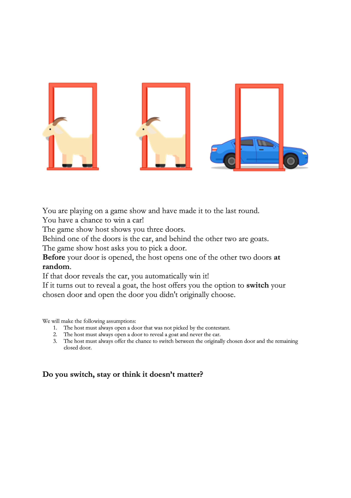

It pays to think like a Bayesian
The Question
Recall that the question this week was to choose between:
A) Switch to another door.
B) Stay with your original door.
C) It doesn’t matter if you switch or stay.

The Answer
The answer is that you should switch doors, and in fact if you do switch, you double your chances of winning the car - from 33.3% to 66.7%.
This is known as the Monty Hall problem and when it was first posed in a magazine column in 1975 managed to confuse readers to the extent that even mathematicians were writing in to the magazine to claim that answer was in fact wrong and staying with the originally chosen door was the better strategy for success.
The simplest way that I can explain this is that you start out with a 33.3% chance of winning the car and those probabilities don’t change once you lock in your selection and Monty offers you another chance to choose (i.e. the probabilities don’t change to 50/50 once Monty reveals what’s behind one of the doors).
If you stay
If you choose the correct door to start with (for which there is a 33.3% chance), staying will result in you ending up with the car (winning).
If you choose the incorrect door to start with (for which there is a 66.7% chance), staying will necessarily result in you ending up with a goat (losing).
If you switch
If you choose the correct door to start with (for which there is a 33.3% chance), switching will result in you ending up with a goat (losing).
If you choose the incorrect door to start with (for which there is a 66.7% chance), switching will necessarily result in you ending up with the car, because Monty has to pick the only other losing door to open (winning).
Staying is associated with a 33.3% success rate, whereas switching doubles your chance of success to 66.7%.
Stop here if equations give you the equivalent of the aftermath of eating Mexican food. What I have done below is show how we can arrive at the same answer using an analytical approach when our logic/intuition fails. You may not want to venture that far…
What I think is cool about this problem is that while the result might seem counterintuitive to how we naturally process chance, using Bayesian reasoning provides a formulaic way to get at the right answer. This again uses conditional probabilities as I introduced them a few weeks ago. Bayesian thinking is about utilising prior knowledge in conjunction with new data to improve or update our knowledge (whereas the Frequentist approach to statistics doesn’t care so much about prior knowledge and instead just uses the data at hand).
Bayesian reasoning enables the analysis of data under the light of prior knowledge.
Bayes Theorem can be written as:
\[ Pr(\theta | data) = \frac{Pr(data | \theta) Pr(\theta)}{Pr(data)} \]
where \(\theta\) could be a particular parameter or hypothesis.
Here:
\(Pr(data | \theta)\) is the likelihood function (the data, or what we measure)
\(Pr(\theta)\) is the prior probability of our hypothesis (prior knowledge before we the measurement)
\(Pr(data)\) is the prior probability of the data
\(Pr(\theta | data)\) is the posterior probability of our hypothesis (i.e. “in light of the data”)
On the Bayesian/Frequentist topic, note that \(Pr(data | \theta)\) is what null-hypothesis significance testing (NHST) encapsulates and this is a Frequentist concept. Whenever we calculate a p value we are asking:
- “What is the probability of this new data (or data even more extreme) occurring by chance given the null hypothesis is true?”
But really, what we want to know most of the time is the opposite:
- “What is the probability of the null hypothesis being true given this new data?”
That is a Bayesian concept and is answered with \(Pr(\theta | data)\). Maybe we should become more Bayesian in how we handle our research…
Anyway, excuse the digression. We can generalise Bayes Theorem to the Monty Hall problem as:
\[ Pr(\text{car behind door x} | \text{Monty opens door y}) = \frac{Pr(\text{Monty opens door y} | \text{car behind door x}) Pr(\text{car behind door x})}{Pr(\text{Monty opens door y})} \]
For the sake of the exercise, let x = door 1 and y = door 3.
So we are interested in the probability the car is behind door 1 (that means we picked door 1) when Monty opens door 3 to reveal a goat.
In calculating the different components of Bayes Theorem, we first need to enumerate the various probabilities.
\(Pr(\text{car behind door 1}) = Pr(\text{car behind door 2}) = Pr(\text{car behind door 3}) = 33.3\%\)
These are the prior probabilities.
Then:
\(Pr(\text{Monty opens door 3} | \text{car behind door 1}) = 50\%\)
Monty can only pick doors 2 or 3, as we picked door 1.
\(Pr(\text{Monty opens door 3} | \text{car behind door 2}) = 100\%\)
Monty can only pick door 3, as we picked door 1 and he doesn’t want to reveal the car behind door 2.
\(Pr(\text{Monty opens door 3} | \text{car behind door 3}) = 0\%\)
Monty won’t reveal the car as part of his playing rules.
These are the likelihoods or the data.
The \(Pr(\text{Monty opens door 3})\) is a little trickier to calculate. Here we don’t need to worry about the car being behind any specific door, only that Monty won’t reveal it. Intuitively, this would be \(50\%\) as he only has two doors to choose from. But you can also work this out by summing the product of each of the prior probabilities and the evidence:
\(Pr(\text{Monty opens door 3}) = (0.33 * 0.5) + (0.33 * 1) + (0.33 * 0) = 0.5\)
Finally, we can get to working out the posterior probabilities of the car being behind each door given Monty opens door 3. We use Bayes Theorem as shown above to do this.
\[ Pr(\text{car behind door 1} | \text{Monty opens door 3}) = \frac{Pr(\text{Monty opens door 3} | \text{car behind door 1}) Pr(\text{car behind door 1})}{Pr(\text{Monty opens door 3})} \] \[ = \frac{0.5 * 0.33}{0.5} = 33.3\% \] Likewise:
\[ Pr(\text{car behind door 2} | \text{Monty opens door 3}) = \frac{1 * 0.33}{0.5} = 66.7\% \] and
\[ Pr(\text{car behind door 3} | \text{Monty opens door 3}) = \frac{0 * 0.33}{0.5} = 0\% \]
Remember, we initially chose door 1. So, when Monty opens door 3 (this could have been door 2 - we just needed to pick a door for the exercise), we double our chances of winning by switching to door 2. And this is how Bayesian reasoning can come to the rescue when our own intuition fails.
Further explanation can be found here if you remain unconvinced: